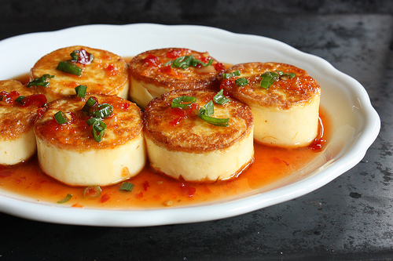

Egg Tofu Recipe

Egg tofu with spicy chilli sauce
egg tofu is a rich ingredient composed of eggs mixed with soy milk. Egg tofu itself is very delicate similar to silk tofu while still maintaining the rich flavor of the egg. Combining this with spicy chili sauce will enhance the dish and give it more flavor. A light and delicious meal awaits. The dish will be comprised of the titular egg tofu which will be panseared. It will be topped with homemade thai chile sauce which will complement the silky smooth egg tofu.
Ingredients
- 8 ounces of egg tofu
- 1 table spoon of canola oil
- 2 teaspoons of cornstarch
- Homemade Thai chile sauce
- 1 table spoon of green scallion rings
Steps
- Cut the package on the dotted line and remove tofu from package. Cut Tofu into 1 inch rounds
- heat a small nonstick skillet over high heat. Pour oil to film the bottom. Dip tofu pieces into the cornstarch
- Pan fry the tofu for 1 to 2 minutes per side. Reduce heat if pan smokes.
- while it fries add any amount of thai chile sauce you want. Sprinkle half of the green scalion rings on top
- once it is done frying add any amount of thai chile sauce you want and sprinkle the remaining green scalion rings on top